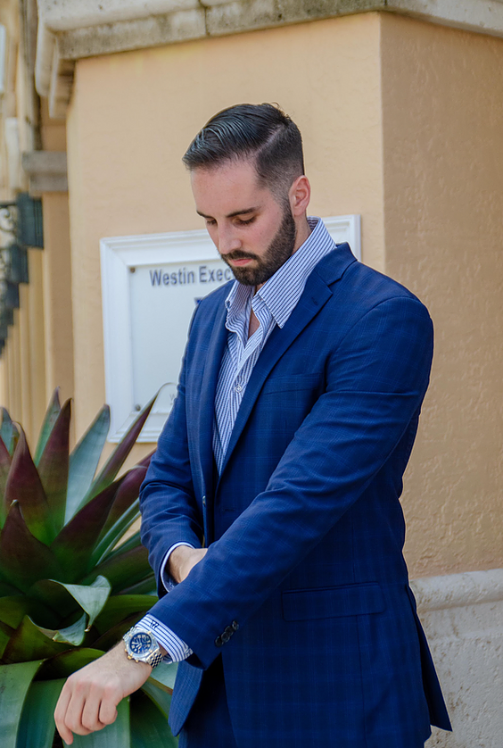

MICHAEL RAYMONDMichael Raymond is the President and Founder of Raymond Representation, a Sport and Talent Agency specializing in Business, Marketing, and Lifestyle management. Raymond has a passion for representing professional basketball players using his network and experience. He currently represents overseas basketball players, g-league players, professional golfers, basketball influencers, and an E-sports team. In the future, he looks to expand into the NBA with his NBPA agent certification license and the personal management of professional athletes. Raymond is currently at the University of Miami School of Law, where he has focused on studying Sport and Entertainment. During his time at Miami Law, he has grown an expansive network within the Sports Law field and made his presence known as a young and aspiring sports agent. Michael is actively involved with the Entertainment and Sports Law Society as a Marketing assistant. He has also gained experience working with Isicoff Ragatz Law and a handful of sports agencies in Orlando and Miami. Michael also worked with Business Manager Orin Mayers who is a mentor and colleague of his. He actively helped Orin with opportunities involving the Ray of Hope foundation sponsored by the NBA Hall of Famer Ray Allen. Together, they opened computer lab facilities for underprivileged kids at Boys and Girls clubs across Miami and Orlando. Raymond spent his undergraduate career at the University of Central Florida, where he was the Student President of the Sports Business program. He was a teaching assistant for professor Scott Bukstein and Keith Harrison, who currently direct the Sports Business Management program at UCF. Raymond spent his time as a TA connecting with speakers whom the program brought to campus and working on research projects for the NFL and NBA. He also led the Sports Business Club at UCF, which consisted of over 150 students, and organized private trips across the country each year to meet with sports organizations. During his tenure as Student President of the club, Michael met with leaders at the Denver Nuggets, United States Olympic Committee, Denver Broncos, Phoenix Suns, Arizona Cardinals, etc. Raymond also gained tremendous experience working in the Sports Management field while at UCF. Interning and volunteering for over 20 different sports organizations, including the Orlando Magic, Orlando City Soccer, IMG Academy, ESPN, UCF Athletics, NFL Pro Bowl, and March Madness. Raymond also spent a lot of his time researching for Scott Bukstein and recently got published in a book called Business and Governance in College Sports. He has been featured in Voyage Miami's Hidden Gem's magazine, Fan Experience podcast, Sports Law Weekly podcast, Sixth Man podcast, and the Sports Agent Blog. Now a Certified NBA Agent, Raymond is expanding his company Raymond Representation into the agency world. Once he is graduated from Miami Law in 2022, he will look to expand into Sports Law opportunities and consulting. Raymond wants to continue to mentor, motivate, and inspire talent and athletes nationwide so we can all reach our maximum potential as leaders in our sport and be entrepreneurs outside of sport. |
 |
JAKE DOOBROWJake started with Raymond Representation as one of the managing partners and VP of Marketing. He is no stranger to the marketing field having earned his bachelor’s degree in Marketing and Professional Sales from Florida State University in 2019 and is currently earning his MBA from the University of Florida. Jake’s ultimate goal with Raymond Representation is to work with clients through various marketing and endorsement deals. Jake is also a South Florida native and a loyal one at that always cheering on the Heat, Dolphins or Marlins. |
|
JAY DOOBROWJJay Doobrow joined the Raymond Representation team in 2021 as their Executive Strategic Advisor. Jay has endless years of experience in the advising field and has worked with numerous sports agents and athletes around the country. His experience in the field started early on back when he received his Bachelor’s Degree from the University of Florida, Doobrow went on to earn his MBA from Nova Southeastern University. In his advising role with RR, he will look to keep pushing athletes to their full potential. | |
ALAN K. FERTELAlan serves as the General Counsel for Raymond Representation. One of the most decorated lawyers in all of South Florida with over 30 years of experience, Alan has been linked to the Miami Marlins, Miami Dolphins, Florida Panthers and his Law School Alma Mater, the University of Miami Hurricanes on broadcasting agreements. He also served as counsel to the Miami-Dade Special Olympics and the World Series of Boxing. Fertel has also made his mark on the entertainment world as well having negotiated endorsements for Speedo, Coca-Cola and Toyota. One of his most notable accomplishments came when “The Firm” recognized him on Miami’s Super Lawyer List. Alan is no stranger to client relations either as he has consulted with eight first-round NFL Draft picks. |
|
SCOTT BUKSTEINScott Bukstein serves as a Senior Advisor for Raymond Representation and has been with the agency from the beginning. Bukstein has a decorated background having earned his Bachelor’s degree from the University of Michigan and his Law Degree from the University of Minnesota before breaking into the sports industry. He has served with the NFL as a consultant and researcher and is currently the Undergraduate Program Director and the Associate Instructor of Sport Business Management at the University of Central Florida. Bukstein also has a wide variety of contacts with multiple NBA executives and is knowledgeable with the CBA guidelines as well. Most importantly, he has served as Michael’s direct mentor since the beginning and has played a crucial role in Raymond Representation since the two crossed paths at UCF. |
|
BRANDON EGOZIBrandon Egozi started with the RR family from the beginning and has served as one of their Financial Advisor’s since. Egozi comes from a background in the financial industry leading back to his time at the University of Central Florida where he graduated with a Bachelor of Business Administration with a focus in finance as a part of the Burnett Honors College. His experience in the field extends even further prior financial positions held with companies such as Coldwell Banker Commercial, Lockheed Martin and Deutsche Bank. |
|
RUSS MARTINRuss Martin holds a Senior Lifestyle Advising role with Raymond Representation. He is able to help the RR clients with just about anything they might need when in a city or state. Russ is also considered to be an expert in cars, boats, social life and living life to its full potential, especially in the South Florida area. He and Michael have been close friends for years and years to come and plans to be there doing what he can for the RR family. |
|
GRANT AQUIGrant Aqui works in the RR scouting department as well and also holds a player advising role. Grant hit the ground running after receiving his Bachelor’s Degree in finance with a Minor in sports business management from the University of Central Florida. Aqui has a loaded background in the basketball industry as he served as a Team Assistant for the NBA G-League’s Lakeland Magic as well as a Team Attendant for the Orlando Magic. He has also served in different basketball operations roles with the Phoenix Suns and Washington Wizards. As a part of the Raymond Representation team, Grant looks to help clients reach their max potential using his endless development skills. |
|
ZACH SMITHZach Smith serves in a crucial role for the RR team in their scouting and basketball relations department. Smith comes from a heavy sports background which began back at Palm Beach Atlantic University where he was a member of the basketball team. He then went on to earn is Bachelor’s Degree in sports management from the University of Central Florida. Smith has deep ties in the scouting industry as well as he served as a scout with Advance Pro Basketball and Sports Info Solutions. He also served as a Basketball Consultant with Creating Young Minds. He plans to use his extensive knowledge in the field to help the RR clients reach their full potential. |